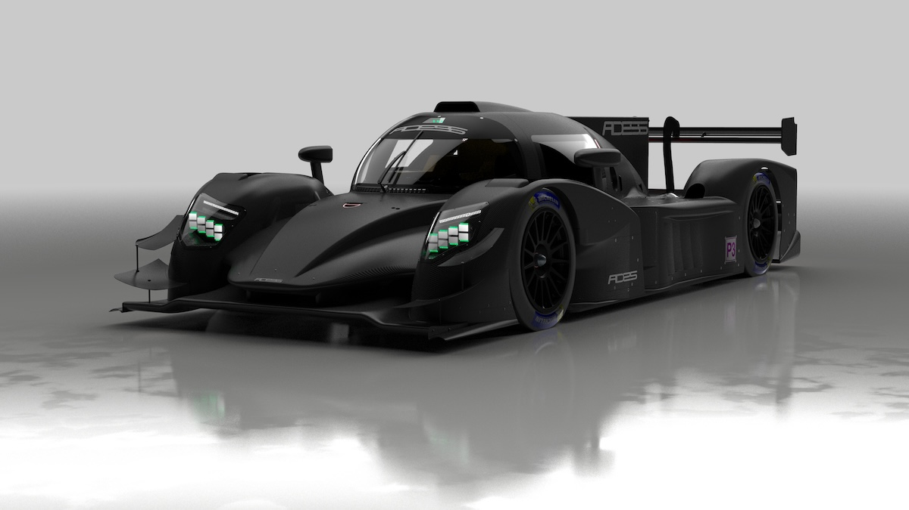

Ligier LMP3

€ 300.000
Een LMP3-auto (Le Mans Prototype 3) is de betaalbare instapklasse binnen de prototype-langeafstandsracerij, ontworpen als opstap voor jonge talenten en gentleman drivers richting LMP2 en de Hypercar-klasse in onder meer de European Le Mans Series (ELMS), de Michelin Le Mans Cup en het Amerikaanse IMSA-kampioenschap. Net als bij LMP2 zijn de kosten strikt begrensd door middel van standaardtechniek: vier gelicentieerde fabrikanten (Ligier, Duqueine, Ginetta en ADESS) bouwen een koolstofvezel chassis met een minimumgewicht van 1.000 kg. Sinds het 2025-reglement (geldig tot en met 2029) worden alle LMP3-auto's aangedreven door een door Oreca geprepareerde 3,5-liter Toyota V6-biturbomotor (ter vervanging van de oudere atmosferische Nissan V8) die 470 pk levert via een sequentiële 6-versnellingsbak, zonder hybride-aandrijving.
Leer meer over de LMP klasse